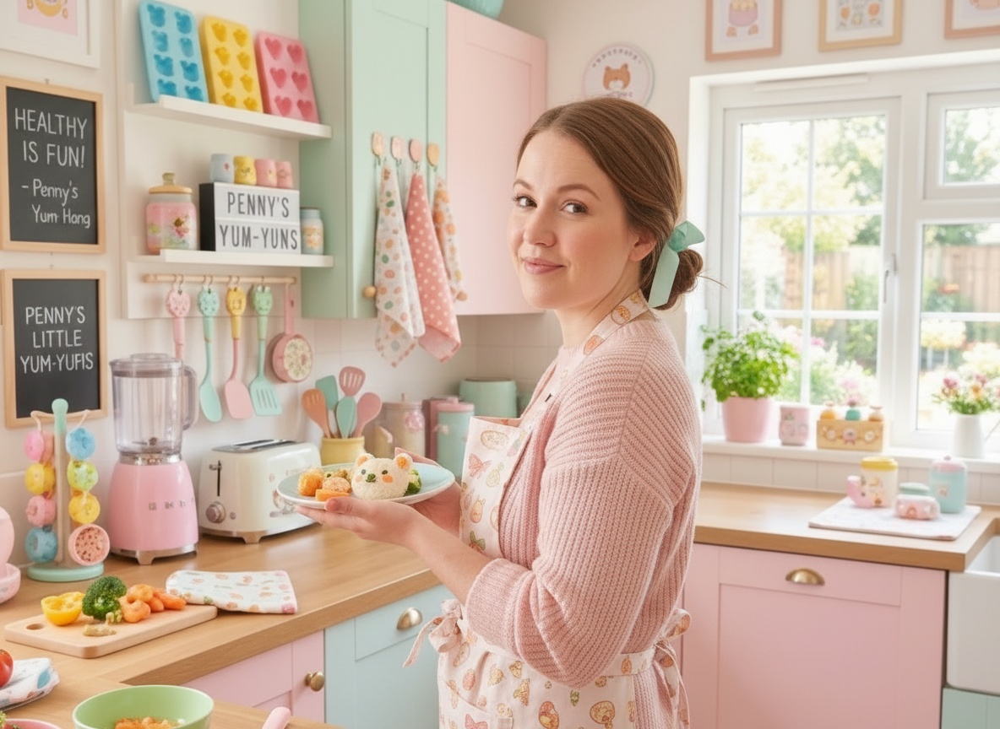
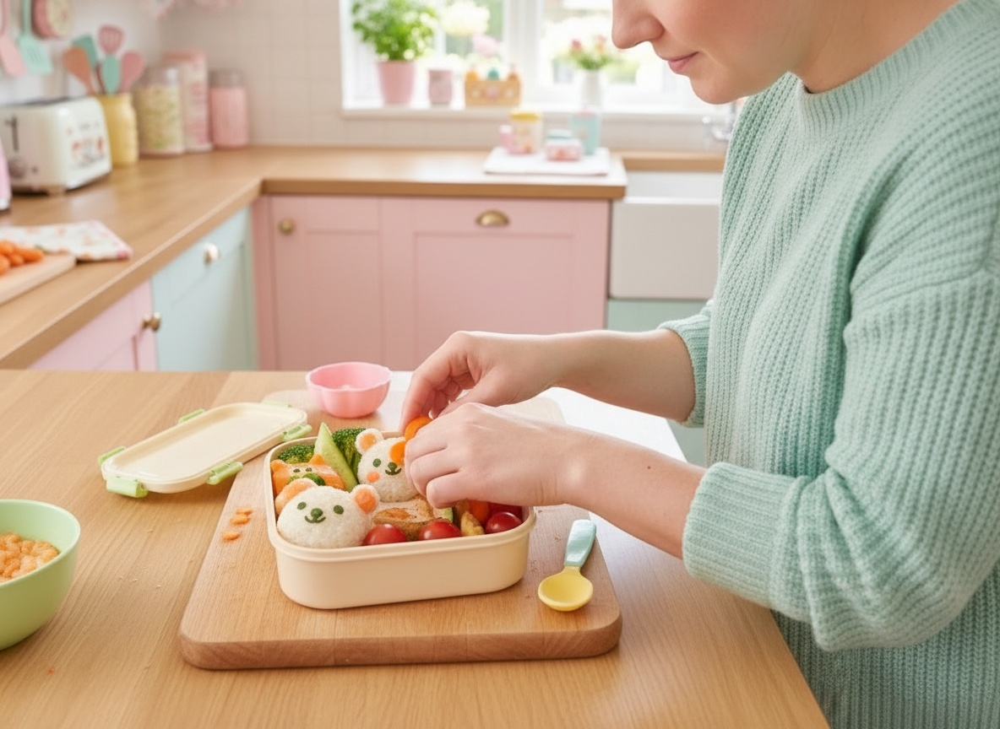
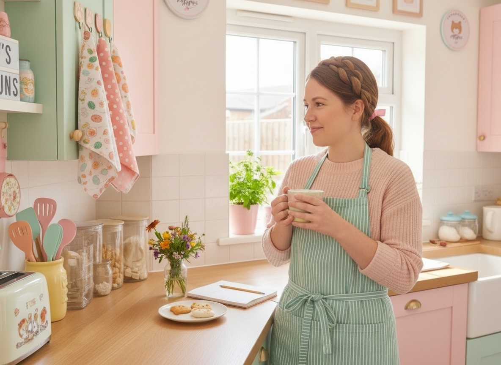

Hey, Sweet Mamas!
I used to be a preschool teacher. Then I had a daughter who decided that anything green was a personal insult — and I learned the one thing that always works: kids don't reject food, they reject boring food.
So I started giving vegetables a story. Spinach became Dragon-Power Pancakes. Zucchini became Teddy Bear Bites. And suddenly dinner stopped being a battle.
No guilt, no 100%-organic lectures, no fancy equipment. Frozen veggies and store-bought purée are completely fine by me — if the end result makes your kid smile, you won.
What you'll find here
Bento Box Makeovers
Turning everyday sandwiches and fruit into fairytale scenes (cheese moon cutouts, bear-shaped bread, cucumber stars).
Hidden Veggie Magic
Desserts that look like a pink unicorn muffin but hide beets, carrots, or avocado inside.
5-Minute Cute Hacks
Quick tricks - a banana "Dolphin", a flower-shaped hard-boiled egg.
Kid-Party Showstoppers
Visually stunning but simple birthday treats moms can pull off without pastry training.

The 3-Step Cuteness Rule
Every single recipe here comes with three tiny moves that turn an ordinary dish into something adorable — in under 30 seconds.
- Give it a shape — a cutter, a mold, one clean knife cut.
- Give it a face — candy eyes, a nori smile, two blueberries.
- Give it a name — nobody eats zucchini muffins, everybody eats Teddy Bear Bites.
That's the whole magic trick. No pastry school required.
Start with these


The cookbook
The Cutie-Fied Cookbook
30 brand-new recipes you won't find on this site, each with a Magic Moment your child makes happen, age-graded Little Helper jobs and a story to read at the table. Plus a 2-week lunchbox plan and a Brave Taster chart.
Take a peek inside
Why I do this
Because I remember standing at this counter at 7am, holding a plate my daughter wouldn't touch, feeling like I'd already failed the day before it started.
You haven't failed. You just need a bear-shaped cookie cutter and a slightly ridiculous name for the broccoli.
“If it's cute, they'll eat it. Promise!”